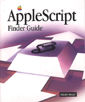

AppleScript Finder Guide
The AppleScript Finder Guide: English Dialect is the definitive description of the terminology defined by the Finder for use with the English dialect of the AppleScript scripting language. The Finder is a specialized application that controls the Macintosh desktop: the working area of your screen where you can use the mouse and the keyboard to open and close folders, manipulate files, and inspect or alter various aspects of the computer's operation. Finder scripting involves performing the same kinds of tasks, except that instead of triggering actions with the the aid of the mouse and the keyboard, you trigger actions from scripts. This book is an essential reference for anyone using AppleScript to modify existing Finder scripts or write new ones. The first chapter describes how to begin recording and writing Finder scripts. The rest of the book describes the terms defined by the Finder that you can use in scripts to specify objects (such as folders, files, or disks) and commands (such as Close, Clean Up, or Sort). Each term's description includes one or more sample scripts demonstrating how to use the term. To get the most out of this book, you should be familiar with Macintosh computers. Although not required, some previous experience with another scripting language (such as HyperTalk) is also helpful. This book is intended for use with the AppleScript Language Guide: English Dialect.
Availability: Click below to obtain The AppleScript Finder Guide: English Dialect in any of the following formats.

Printed 
Acrobat (2.6 MB).
Book Contents
- Tables and Listings
- Preface - About This Guide
- Chapter 1 - Introduction to Finder Scripting
- Chapter 2 - Finder Objects
- Chapter 3 - Finder Commands
- Appendixes
- Appendix A - Finder Commands at a Glance
- Appendix B - Finder Errors